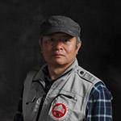
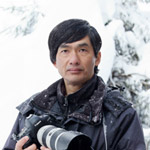
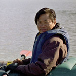
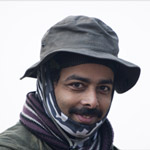
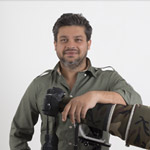
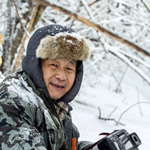
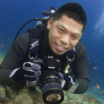
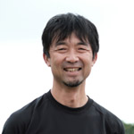
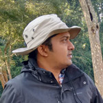
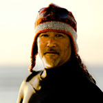

winners gallery 2017
GRAND PRIZE
Story: ボロブドゥール遺跡はインドネシアのジャワ島中部のケドゥ盆地に9世紀より所在する大規模な仏教遺跡である。 世界的な仏教寺院としても知られるジョグジャカルタから車で約1時間である。 日の出をみるベストロケーションが3ヶ所ある。 その内の一つであるPunthukSetumb Sunrise
Pointで,私はこの写真を撮影した。 訪れるのに最も適している季節は, 一年の半ば乾燥している季節が霧を最適な状態にする。 霧が濃すぎると霧の層を見ることができず、寺院のシルエットを捉えることができない。 私がこの撮影をした日はやや風が強かった。 私は霧の層間に動きを作り出すために長時間露光で撮影し、霧の層がよりはっきりとするように白黒で仕上げた。
Camera: Canon 5D Mark III; Canon 70-200mm/f2.8L II USM; 10 Seconds; ƒ/16; ISO 50.
Lumix Award

Story: 中国、山西省のTsinling 山脈の丘陵地で金糸猴（ゴールデンモンキー）が何か食べる物を見つけました。 一匹の子ザルはキウィの木を見つけ母ザルを呼んでいます。 その仕草と声からきっと「お母さん、ここにキウィの木があるよ。 ここへ来て一緒に食べようよ」と言っているに違いないと思いました。
Hey Mama
Shanxi Province, China
By Kuanliang Ding
Hubei, China
Camera: Nikon D800; Nikkor AF-S 300mm/2.8 lens; 1/250 sec; ƒ/2.8; ISO 800.
Wildlife
WINNER WILDLIFE

Story: これはニホンザルです。 日本では、冬から春にかけて、椿や山桜などの花が次々咲きます。 ニホンザルはしばしば花を食べます。 何故なら、花の蜜は甘く栄養が有る為です。 この雌猿は約36歳でこのグループで最長老です。 朝、彼女は椿と山桜の木に登り、花を次々に食べ、山桜の木の上で休憩していました。
彼女の口元には、椿の黄色い花粉がいっぱい付いていました。 彼女はそんな事を気にせず、うららかな春を過ごしていました。
On the Cherry Tree
Arashiyama, Kyoto City, Japan
By Shinichi Masuda
Tokyo, Japan
Camera: Canon EOS-1DX; EF100-400F4.5/5.6LIS; 1/2000 sec; ƒ/5.6; ISO 1600.
HIGHLY HONORED WILDLIFE

Story: 2015年秋、知床半島の先端部の小川にはたくさんのカラフトマスが遡上した。 いわゆるBig Salomn Run の年であった。 キタキツネは通常ヒグマの食べ残したカラフトマスを食べるが、この年は、生きているカラフトマスを直接捕らえる場面を何度か目撃することができた。
A Big Salmon Run
Rausu, Shiretoko, Japan
By Shinji Sato
Hokkaido, Japan
Camera: Sony A77II; Minoruta 400mm f/4.5; 1/640sec; f/6.3; ISO 1000.
HIGHLY HONORED WILDLIFE
Story: ラングールはよく見かける動物ですが、瞬間を捉えるためには忍耐が必要です。 ある日の午後、黒足ハヌマンラングール（オナガザル科）のグループが木の上にいました。 このやんちゃな子ザルは親ザルのしっぽに捕まって揺れたり、下に落ちるとすぐさま登ってきて、家族との時間を楽しんでいました。 母ザルは他の子ザルたちが順番を我慢して待っている様子に気が付いたようです。 ラングールはとても社交的でよく遊びます。 アクロバティックな遊びは木の上での生活に慣れる為であり、骨や筋肉の成長にも繋がります。 また社交性を高めコミュニケーション力も養います。 やんちゃな子ザルと家族を捉えたこの1枚は特別な作品となりました。 私にとって写真とはストーリーであり、そして見る人を笑顔にすることがミッションです。Camera: Nikon D4; Nikkor 300mm; 1/1250 sec; f/5.6; ISO 1000
HIGHLY HONORED WILDLIFE

Story: インディラ・ガンディー野生生物保護区・国立公園は、インドのタミル・ナードゥ州ポラチーのアナイマライ丘陵に位置する保護地区です。 世界遺産である西ガーツ山脈の一部としてユネスコに検討されているこの保護区は、シシオザル、オオサイチョウ、ニルギリラングール、ニルギリタールなど多くの珍しい固有種の生息地です。 シシオザルは、熱帯雨林に生息する昼行性のサルです。
樹上性のシシオザルは木に登るのが非常に上手く、ほとんどの時間を熱帯の湿度の高い常緑樹林で過ごします。 他のマカク属のサルとは違い、シシオザルは人間と接触することを嫌うため、今回ヒルが生息するこの地域でのシシオザルの撮影は、これまでで最も大変な撮影の一つとなりました。 彼らは初めのうちは私に近づこうとせず、常に一定の距離を保っていました。 私は心に響くような瞬間を撮影すると決め、この場所に予定より数日長く滞在することにしたのです。
A Look to Heart
Anamalai Tiger Reserve, India
By Pramod C L
Gurgaon, India
Camera: Canon EOS-1D X Mark II; EF500mm f/4L IS II USM; 1/800 sec; f/4; ISO 1000.
HIGHLY HONORED WILDLIFE

Story: ある日の早朝、インドのコーベット国立公園で、ゾウの群れがダストバスをするために川沿に集まってきました。 朝のシュールな日差しがダストを通すと、まるで全てを黄金色に変えてしまうように、このイメージが作り出されました。
Golden Dust
Corbett National Park, India
By Shivang Mehta
Haryana, India
Photographer's Website
Camera: Canon 1Dx Mark II; Canon 400mm f2.8 IS2; 1/1000 sec; f/7.1; ISO 1000.
HIGHLY HONORED WILDLIFE

Story: シェンノンチアゴールデンモンキー（キンシコウ）は保護動物であり、森や山の中1500~3300mに生息している。 世界で最も美しいサルの一つだ。 ベストな写真を撮るために私は彼らの生活習慣や特徴を学んだ。 私の作品を通じてゴールデンモンキーの生活状況を示し、人々にこれら動物の自然環境について知ってもらう機会としたい。
Golden Monkey
Shennongjia, Hubei, China
By Mingjian Yu
Wuhan, China
Camera: Canon EOS-1DX Mark II; EF70-200mm; 1/800 sec; f/6.3; ISO 1000.
LANDSCAPE
WINNER LANDSCAPE
Story: 真冬のライトアップ時に、雪が光に当たってる瞬間を狙いました。 風が吹いて雪が降る中、長時間露光をすることによって、星が流れて見えるように表現しました。 また湖面が全て凍りつく前に撮影したので、青と白がまばらになっているわずかな時期で撮影をしています。Camera: Canon 1Dx; Canon 24-70Lmm; 3.2 sec; ƒ/7.1; ISO 800.
HIGHLY HONORED LANDSCAPE
Story: ある日の早朝のこと、濃い霧が所々にかかる中、一本の木がマウントブロモ国立公園の溶岩フィールドに立っていた。 それは夢のような美しい光景を作り出していた。Camera: Nikon D810; Nikon 70-200mm; 1/30 sec; f/8.0; ISO 100
HIGHLY HONORED LANDSCAPE
Coloring
Gifu, Japan
By Yoshikazu Miyajima
Tajimi, Japan
Camera: Canon EOS 6D; EF24-105mm F4L IS USM; 2.5 seconds; ƒ/16; ISO 200.
HIGHLY HONORED LANDSCAPE
Bloom
Lake Nukabira, Hokkaido, Japan
By Yumiko Nakagami
Hokkaido, Japan
Camera: Canon EOS 70D; Sigma 10mm Fisheye; 1/30 sec; f/8; ISO 400.
HIGHLY HONORED LANDSCAPE
Story: 今にも雨が降りそうなぐずついた空模様で天気予報も芳しくなかったのですが、何か撮れそうな予感がしたのでいつもの海岸を目がけて車を走らせました。 小雨がぱらつく中、夜明けを待っていると雲の薄い部分がほんのり夜明けの色に染まり始めました、これはチャンスです。 上空の風が強く動きの速い雲だったので長時間露光で空に動きを出し、逆に水面をフラットにすることで対比を活かした仕上がりとなりました。Camera: Sony ILCE-7RM2; Sony SEL2470GM; 60 seconds; f/13; ISO 100.
HIGHLY HONORED LANDSCAPE
Story: 富士山は神秘的な雲の宝庫です。 この写真は猪之頭林道で夜明け後に撮影しました。 私は６年近く富士山の写真を撮り続けていますが、これほどまでに凄い雲を見たのは初めてでした。Camera: Nikon D800; NIKON 70-200mm f/2.8 GII ED; 1/640 sec; f/8.0; ISO 100.
OCEAN
WINNER OCEAN

Story: 被写体ミズダコ。水温３度。 水深－３ｍ。 ミズダコは、海底に降りる時はパラシュートのように、獲物を捕らえる時はネットのように、足を広げ膜を上手に使います。 そんな瞬間を狙い撮影しました。
Fly
Hakodate, Hokkaido, Japan
By Toru Kasuya
Kanagawa, Japan
Camera: Canon EOS 7D; Tokina AT-X 107 DX Fish eye zoom 10-17mm F3.5-4.5; 1/180 sec; f/8; IOS 200; Flash Inon D2000.
HIGHLY HONORED OCEAN
Story: イボクラゲ Cephea cephea はその見た目からクラウンクラゲまたはカリフラワークラゲと呼ばれる時もある。 直径48cmから58cmの大きさ。 多数の突起物が中央部分についている。 珍味や医療用として食す地域もある。 私は、クラゲの周りを泳いでいる小さな魚を探している時、この美しいクラゲを見つけた。 クラゲには魚の代わりに手のひらサイズのカニが乗っていた。 ウミガメはイボクラゲを捕食する。 このクラゲに遭遇する直前に大きなアオウミガメを見かけた。Camera: Nikon D750; Sigma 15mm; 1/200 sec; f/11; ISO 125.
HIGHLY HONORED OCEAN

Story: 6月 天候 曇り 水温20度 水深-5ｍ能登島周辺に突如と現れる「クラゲ玉」と呼ばれるミズクラゲの大群。 その中を彷徨うように泳ぐ１匹のクサフグ。 中性浮力を取りながらクラゲ玉と同じ水深を保って撮影。
Wander Around
Notojima, Ishikawa, Japan
By Mitsuru Tomiya
Osaka, Japan
Camera: Nikon D610; AF-S NIKKOR 14-24mm f/2.8G ED; 1/250 sec; f/11; ISO 800.
HIGHLY HONORED OCEAN
Story: 海の領域で、ヘアリーフロッグフィッシュは獲物を待ち伏せする。 環境に溶け込み、サンゴや岩のような姿をし、じっと長時間獲物を待ち続けた後、ほんの一瞬で獲物を飲み込む。 このヘアリーフロッグフィッシュは狩りをしているブッシュマンに似ている。 私は周りの環境に焦点をあて、ロングシャッタースピードを使い、被写体のより良い色を引き出す為ライトで質感を捉える事にした。 私はこの作品で特別なこの状況を優美に描き出すことを意識した。Camera: Canon 6D; Canon 100mm macro; 1/5 sec; f/20; ISO50; Flash Inon Z240.
HIGHLY HONORED OCEAN
Story: Story: モレイ（ウナギ科）は水中では見つけやすい。 大抵はダイバーが近づくと恥ずかしがり屋で岩の下に隠れてしまう。 しかし、このウナギはカメラに興味を持ったようだった。 青いシルエットを作る為、UVフォーカスライトをバックライトとして使うスペースをウナギとの間にとりつつ、スヌートでウナギの目にハイライトをあてた。Camera: Canon 5DS; Canon 100mm/f2.8l macro; 1/80 sec; f/9; ISO 1600.
HIGHLY HONORED OCEAN
Big Mouth
Hayama, Kanagawa, Japan
By Mitsuru Tomiya
Osaka, Japan
Camera: Nikon D610; AF-S VR MicroNikkor 105mm f/2.8G IF-ED; 1/200 sec; f/22; ISO 200.
SMALL WORLD
WINNER SMALL WORLD
Pot Maker
Coimbatore, India
By Karthikeyan Shanmugasundaram
Coimbatore, India
Photographer's Website
Camera: Canon 5D Mark III; Sigma 105mm f7.1; 1/640 sec; ƒ/11; ISO 2500.
HIGHLY HONORED SMALL WORLD
Woods in a Pod
Wuhan City, Hubei Province, China
By Minghui Yuan
Wuhan, China
Photographer's Website
Camera: Nikon D3S; Tamron AF 90mm/2.8 macro lens; 1/180 sec; f/13; ISO 1000.
HIGHLY HONORED SMALL WORLD
Backlight
Mahaveer Sanctuary Goa,India
By Vinod (Baiju) Patil
Aurangabad, India
Photographer's Website
Camera: Nikon D800E; Nikon 105 mm f/3.2; 1/250 ses; f/10; ISO 200.
HIGHLY HONORED SMALL WORLD
Paradise of Love
Wuhan City, Hubei Province, China
By Minghui Yuan
Wuhan, China
Photographer's Website
Camera: Canon 70D; Tamron AF 90mm/2.8 macro lens; 1/80 sec; f/9; ISO 400
HIGHLY HONORED SMALL WORLD
Just Emerged From Eggs
Gomati River, Lakhimpur, India
By Satpal Singh
Mohammadi, India
Photographer's Website
Camera: Nikon D7100; Nikon AF-S VR Micro-Nikkor 105mm f/2.8; 1/500 sec; f/32; ISO 320
HIGHLY HONORED SMALL WORLD
Caterpillar’s Idea
Wuhan City, Hubei Province, China
By Minghui Yuan
Wuhan, China
Photographer's Website
Camera: Nikon D7000; Nikkor AF-S 85mm f/3.5 macro lens; 1/250sec; f/9; ISO 200
BIRDS
WINNER BIRDS
Story: インドのウランにある私のお気に入りのウィーバーコロニーでこの写真を撮りました。 ウィーバーフィンチはとても社交性のある鳥で、コロニーには多くの巣があります。 巣の周りでオスとメスが小競り合いをすることはよくあることです。 この種類のフィンチのメスは他のメスの巣に卵を産むことで知られています。 この写真の状況は推測しか出来ませんが2羽のメスが一つの巣をめぐって取り合いをしているのか、または1羽のメスが他のメスの巣に卵を産もうとしているところをその巣の所有者のオスとメスに邪魔されているのかもしれません。Camera: Nikon D3; Nikon 600mm f/4 G VR + TC14EII; 1/1600 sec; f/8; ISO 3200; Nikon SB-800 flash @ 1/64th power.
HIGHLY HONORED BIRDS

Story: 1対のセイタカコウ（コウノトリ科）がサンクチュアリにいたので太陽の光を背景に撮影を試みました。 その為には夕刻である必要があり、周りは湿地で近づくことが出来ないため、私の方に向かって飛んで来る時しか、そのチャンスはありませんでした。 8日目にしてようやくオスのセイタカコウを幸運にも撮影することが出来ました。
Black Necked Stork
Keoladeo Bird Sanctuary, India
By Indranil Basu Mallick
Pune, India
Photographer's Website
Camera: Canon EOS 70D; Canon 500mm f/4 with 1.4x extender; 1/1600 sec; f/5.6; ISO 500.
HIGHLY HONORED BIRDS
Story: 鈴鹿の森庭園は日本最大級のしだれ梅庭園だと思います。 この梅と、ここにやってくる野鳥を狙ってこの日は１１時間滞在しました。 残念ながら朝から雨や曇りで、青空の下での撮影はかないませんでしたが、早春にいち早く桃色の大輪の花を多く咲かせ、その大きく美しく艶やかに枝垂れる梅はピンクの世界で圧巻でした。 そこにやってくるメジロを待って鳥景として撮影することができました。Camera: LUMIX GH4; LEICA DG VARIO-ELMAR 100-400mm; 1/200 sec; f/7.1; ISO 250.
HIGHLY HONORED BIRDS
Story: クウェートの小さい島であるKubbarアイランドで夏にこの写真を撮りました。 気温は時には45℃まで上がる暑すぎる夏でした。 あるヒナが親鳥に飛び方を教わり自分は飛べるんだと信じきって走りだした姿を低い位置からのアングルで捉えることが出来ました。Camera: Canon 7D Mark II; Canon EF500mm IS II USM; 1/8000 sec; f/4; ISO 320.
HIGHLY HONORED BIRDS
Blue Tailed Bee Eater
Burdwan, West Bengal, India
By Kallol Mukherjee
West-Bengal, India
Photographer's Website
Camera: Nikon D800; Nikon 300mmm f/4 + 1.4 TC II; 1/2000 sec; f/5.6; ISO 1600.
HIGHLY HONORED BIRDS
Morning Mist
Bharatpur Bird Sanctuary, India
By Vinod (Baiju) Patil
Aurangabad, India
Photographer's Website
Camera: Nikon D800E; Nikon 800 mm; 1/250 sec; f/5.6; ISO 100.
VIDEO
VIDEO WINNER
Story:Snow Womanは日本の昔話に出てくる「雪女」のこと。白く美しい妖艶な女性の姿をしたこの妖怪は、人間の男を魅了し凍らせてしま うとお話の中にあります。そして北国・北海道に居るタンチョウも、遥か昔から人々を魅了し続けています。純白の肌、纏った黒衣装紅、化 粧雪の世界で舞う姿はそれは美しく、されども決して触れることは出来ません。そんなタンチョウに人生を捧げた人も少なくないかもしれません。その妖美は我々の動きを留め、凍えるような寒空の下、その美しさに見とれ正に気づかずに凍ってしまうほどに、無我夢中に私 達を惹きつけます。凍てついてしまうほど美しく虜になる、そんな日本伝説の雪女をタンチョウから感じるのです。Camera: Panasonic GH5, Nikon D500
Video Highly Honored

The Natural Wonder
Raja Ampat, Indonesia
By Jennifer O’Neil
Alabama, United States
Camera: Canon 5D Mark III; Sigma 15mm lens.
Video Highly Honored

Story:小笠原諸島は日本最大のアオウミガメの繁殖地で、夏になると島のあちこちの海岸で子 ガメが生まれ海へと帰って行きます。砂の中 で生まれた子ガメは、通常は砂の温度が下がる夜に地上に這い出て海を目指すのですが、この日は特別保護区の無人島で、太陽が燦 々と輝く昼間に砂から上半身を出したまま身動きしない子ガメを見つけました。「可哀想に出遅れて夜のうちに海に帰れなかった子ガメ
かな」と思いながら写真を撮っていると、モソモソと動き始め砂から這い出し大急ぎで海を目指し歩き始めました。その後５、６匹の子ガ メが這い出して来たので、急いで動画に切り替え後を追いかけました。小さな子ガメにはまるで灼熱の砂漠のように熱くて大きな砂浜で 昼間に海を目指すのは容易なことではありません。砂浜には落とし穴のようにたくさんの人間の足跡があり、何度も足跡の穴に落ちては ひっくり返りながらも這い上がりまた進みます。途中には力尽きて干からびてしまった子ガメの姿も見えます。やっと波打ち際にたどり着
いてもカニに捕まってしまう子ガメもいます。運良くこの子ガメたちは無事に海にたどり着き沖へと力強く泳ぎ始めました。しかし、海へ出 ると今度は大型の魚や海鳥たちが子ガメを狙っています。孵化後１年までの生存率は１％。そして成体になる確率はわずか0.2~0.3％と いわれています。幾多の困難を乗り越えて大きくなったアオウミガメは、15~30年後に自分の生まれた場所へと帰って来ます。大海原を 数千キロも旅をし、生まれ故郷にピンポイントで戻ってくる来るのです。
Departure of the Baby Sea Turtle
Ogasawara, Japan
By Mana Nomoto
Tokyo, Japan
Camera: Canon EOS 7D; Canon EF-S 10-22mm f3.5-4.5 USM.
Video Highly Honored
Story: これはニシヨコジマフクロウの雛についての動画です。私は初めて出会った時から、この鳥に惹かれました。それでこの鳥の夜と昼の 生活を追ったドキュメンタリーを制作することにしたのです。夜と昼では生活が全く違います。夜は恐れを知らず、王のように振る舞いま す。しかし、昼間はキュウカンチョウ、インドブッポウソウ、タカサゴダカといった鳥たちに巣を狙われたり、獲物として襲われたり、危険がた くさんあります。さらには人間による妨害もあるのです。ある日、ニシヨコジマフクロウの雛が巣くっていた木が切り倒されてしまうところで したが、運良くその場にいたので、雛なを救うことができました。
{kind=link}
{kind=link}
{kind=link}
{kind=link}
{kind=link}
{kind=link}
{kind=link}
{kind=link}
{kind=link}
{kind=link}
{kind=link}
{kind=link}
{kind=link}
{kind=link}
{kind=link}
{kind=link}
{kind=link}
{kind=link}
{kind=link}
{kind=link}
{kind=link}
{kind=link}
Patil_TreeFrog_24x36_small.jpg){kind=link}
{kind=link}
{kind=link}
{kind=link}
{kind=link}
{kind=link}
{kind=link}
{kind=link}
{kind=link}
Patil_Peacock-24x36_small.jpg){kind=link}
Camera: Nikon D500, Nikon 200-500MM AF-S NIKKOR 200-500MM F/5.6E ED VR.
Video Highly Honored
Child Rearing of Amami rabbits
Amamioshima, Japan
By Futoshi Hamada
Kagoshima, Japan
Photographer's Website